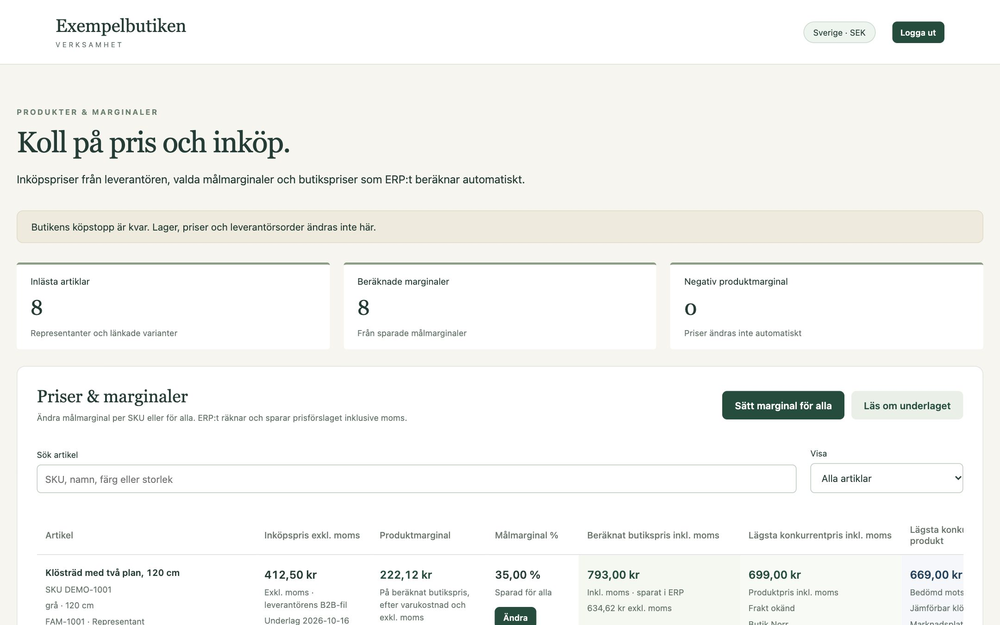
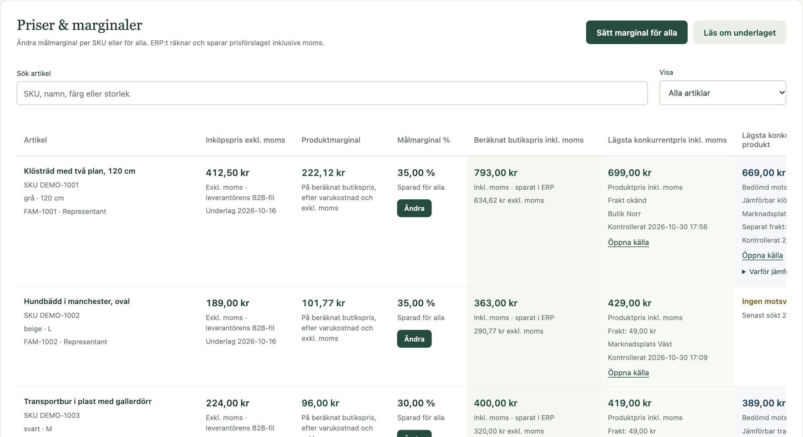
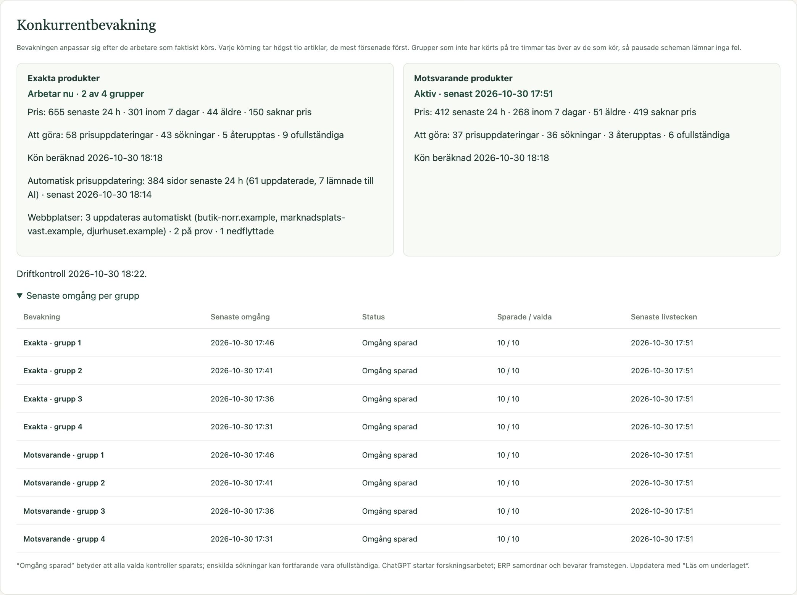

Business systems
E-commerce back office
Purchase costs, target margins and competitor prices for a 1,150-product online shop, in one read-only dashboard.
- When
- Sep 2026 – present
- Status
- Live for one shop; AI monitoring paused
- Source
- Private source
- Stack
Problem and idea
A dropshipping shop sells products it never holds. Supplier costs change, competitors change their prices, and the shop platform has no view of margins. The owner needed to see, for each product, what it costs, what it should sell for and what others charge, without any tool touching the live shop.
The idea: let PostgreSQL own the rules. Workers, both AI agents and a plain price refresher, can only call validated database functions. Every observation is kept, and the dashboard only reads.
How it works
- Catalogue and costsImported snapshots, read-only towards the shop
- PostgreSQLAppend-only ledger, validating functions, row-level security
- WorkersAI agents find and judge offers; a Cloudflare Worker re-reads verified prices every 30 minutes
- DashboardStatic site behind sign-in: margins and competitor prices
Demo



Synthetic data. These screenshots were rendered from the real dashboard code, with every request answered by a local mock containing invented products, sellers, prices and links. The shop’s name is replaced with “Exempelbutiken”.
What I built
- The data model and 41 versioned migrations, with the domain logic in validating PL/pgSQL functions in a private schema.
- Margin calculation in whole öre, editable margin targets and a preview of every price change before it is saved.
- Competitor price monitoring: exact matches by EAN, judged equivalent products, seller coverage and an adaptive work queue.
- A Cloudflare Worker that re-reads verified offers from the page’s structured data, with sites that earn or lose automatic refresh.
- A versioned contract for the AI workers, published by migration, with rollback scripts for each version.
Stack
Quality evidence
- About 3,800 lines of SQL tests across the migrations, run in CI.
- 92 JavaScript test cases for the dashboard and the price refresher.
- Three CI workflows: SQL tests, dashboard checks and deploy, and the price refresher.
- A deployment log of verified checkpoints that the workers read before they act.
Current limits
- Shop catalogue and supplier costs are imported by hand; there is no live supplier API.
- Finding new competitor offers depends on AI scheduled tasks, which are paused right now. The refresher only re-reads offers that were already verified.
- Competitor prices exclude shipping, and the margin excludes payment fees and overhead.